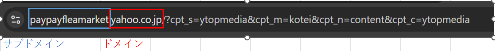

①flex-wrap
→折り返しの有無（適用したい要素の親要素に設定）。デフォルトで折り返しなし。
②flex-direction
→要素の並び方向（適用したい要素の親要素に設定）。デフォルトで行（row）。列（column）を設定可能。
③flex
→autoで要素の幅を親の要素いっぱいまで広げる（適用したい要素に設定）。
Widthで相対割付する場合、要素のPaddingやBorderは割付の範囲に入らない。
例えば、4つのimgに対して25%で割付、そこにborder、Paddingを加えると100%を超えて要素（＝img）が下に回り込んでしまう。
そこで、box-sizeing を border-box にしてあげることで、borderやPaddingも割付の範囲に入れてあげることができる
（ちなみにMarginはborderの外に作るものなので、割付の範囲に入らない）
背景の前に出てくる要素すべてを一定の幅内で均等に割り付けたい場合、それらの要素をどんなタグ（ヘッダーやメインのコンテンツ）でもcontainerの中に一律で入れてあげることで、いちいちwidthやmargin autoを書いてあげなくてもよくなる。
ちなみに、背景前に配置する要素群にwidthやmargin auto を指定しない場合、要素が背景めいいっぱいに広がって、見づらくなるため、設定必須。
同じプロパティに同じ指定をしても、インライン要素 か ブロック要素かで挙動が異なることも多い。
①width / height
→インライン要素には効かない
②margin-top / margin-bottom
→インライン要素には効かない（左右は効く）
③padding-top / padding-bottom
→インライン要素においては、背景色やボーダーは広がるが、行ボックスの高さは変わらない（＝レイアウト的には広がらない）。
④border
→インライン要素においては、上下の border は表示されるが、行の高さは変わらない（＝レイアウト的には広がらない）
⑤overflow
→インライン要素には効かない（インライン要素は箱ではないので、はみ出し制御ができない）
⑥text-align
→インライン要素には効かない（親要素に設定すれば効く）
⑦vertical-align
→インライン要素のみに効く（インライン要素の縦位置調整）
指定した要素において、状態変化が生ずるようなセレクタ（hover、focusなど）にアニメーション（ ＝ 指定した時間をかけて徐々に変化する）をつけることができる。
また、アニメーションを適用するプロパティは指定することができる（色、高さ、余白サイズ、文字のサイズなど、またはそのすべて）。
行間の調整をしたい場合に選択肢に上がってくるのが、line-height と padding。
見た目が似通うことがあるが、動作は異なっているため、違いの把握が必要。
◆line-height
①テキスト行そのものの高さを調整する。
②行を折り返したときなど、一つの要素内で複数行になる場合に特に効果がみえる。
◆padding
①要素の内側の余白（＝ テキストの外側 かつ ボーダーの内側の余白）を調整する。
②テキスト行そのものの高さには影響しない（paddingだけでテキスト間の距離を調整しようとすると、画面サイズがちいさくなるなどして行が折り返し複数行になった時に、想定とは違う見た目になったりするので注意（経験済、、、））。
要素の透明度を変更したい場合に選択肢に上がってくるのが、opacity と rgba() 。
これらは作用する”対象”が違うため、理解しておく必要がある。
◆opacity
指定した要素内の全体の透明度を変更できる（背景色、テキスト、画像、ボーダー、シャドウ など）。
さらにこれらは子要素にも継承される
◆rgba()
background-color や color の指定で利用することで指定した要素内のみ透明度を変更できる（background-colorなら背景色、colorならテキストなど）。
テキストや背景だけ透明度を変えたいのか、ホバー時の動作などで要素全体（ボタンとか）の透明度を変えたいのか、などで使い分けするとよい。
要素を中央よせにしたい場合に選択肢に上がってくるのが、text-align: center と margin: auto。
どちらも作用が似ているが、動きとしては結構違いがある。
◆text-align: center
①作用する対象はinline要素（span, a, img など）
②ブロック内の中身だけが中央に寄る
③作用させたい対象の親要素に設定する。
◆margin: auto
①作用する対象はblock要素（div, p, section など）
②ブロック自体が中央に寄る
③作用させたい要素に設定する。
自分がどちらの動きを望むのか、どこに作用させるべきか、しっかり理解して使い分けたいところ。
要素を横並びにしたい場合に選択肢に上がってくるのが、Floatプロパティとdisplyプロパティ。
どこで使い分けるのか疑問に思っていたが、”要素を横並びにしたい”という目的の場合には、 disply:flex を使うのがスマートのよう。
というのも、 disply:flex は、画面サイズに合わせて横並びにしたい要素の親要素の横幅のサイズを相対的に変えたり、回り込む要素の決定などができ、 レスポンシブデザイン に対応させるのが容易。
Float は、そもそも要素の横並びというよりは、要素を”回り込ませる”ためのプロパティなので、意図しない回り込みが起きたりなど、レスポンシブデザインに対応させるのに不向き。
よって、横並びは disply:flex 、要素の横に画像を回り込ませたいときは floatプロパティ と使い分けるのが良いかも。
サブドメインは、ドメインで提供しているサービスとは異なるサービスを適用したいときに使ったりする。
（例）Yahooフリマ

※出典：ヤフーフリマ（Yahoo! JAPAN）